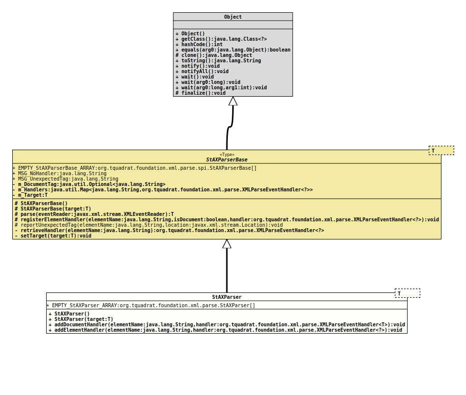

java.lang.Object
org.tquadrat.foundation.xml.parse.spi.StAXParserBase<T>
org.tquadrat.foundation.xml.parse.StAXParser<T>
- Type Parameters:
T- The type of the target data structure.
@ClassVersion(sourceVersion="$Id: StAXParser.java 820 2020-12-29 20:34:22Z tquadrat $")
@API(status=EXPERIMENTAL,
since="0.0.5")
public final class StAXParser<T>
extends StAXParserBase<T>
Parses an XML stream to an object of type
To start the parsing process, call
T; that object is either
provided with the constructor
StAXParser(Object)
or will be created by an instance of
XMLParseEventHandler.To start the parsing process, call
StAXParserBase.parse(XMLEventReader)
on the instance of StAXParser.- Author:
- Thomas Thrien (thomas.thrien@tquadrat.org)
- Version:
- $Id: StAXParser.java 820 2020-12-29 20:34:22Z tquadrat $
- Since:
- 0.0.5
- UML Diagram
-

UML Diagram for "org.tquadrat.foundation.xml.parse.StAXParser"
{kind=link}
-
Field Summary
FieldsFields inherited from class org.tquadrat.foundation.xml.parse.spi.StAXParserBase
EMPTY_StAXParserBase_ARRAY, MSG_NoHandler, MSG_UnexpectedTag -
Constructor Summary
ConstructorsConstructorDescriptionCreates a newStAXParserinstance.StAXParser(T target) Creates a newStAXParserinstance. -
Method Summary
Modifier and TypeMethodDescriptionfinal voidaddDocumentHandler(String elementName, XMLParseEventHandler<T> handler) Adds the document handler.
This handler must create or update the target data structure.final voidaddElementHandler(String elementName, XMLParseEventHandler<?> handler) Adds an element handler.
These handlers will be called from inside another parse event handler.Methods inherited from class org.tquadrat.foundation.xml.parse.spi.StAXParserBase
parse, registerElementHandler, reportUnexpectedTag
-
Field Details
-
EMPTY_StAXParser_ARRAY
An empty array ofStAXParserobjects.
-
-
Constructor Details
-
StAXParser
public StAXParser()Creates a newStAXParserinstance. -
StAXParser
Creates a newStAXParserinstance.- Parameters:
target- The target data structure.
-
-
Method Details
-
addDocumentHandler
Adds the document handler.
This handler must create or update the target data structure.- Parameters:
elementName- The element name for the document.handler- The parse event handler.
-
addElementHandler
Adds an element handler.
These handlers will be called from inside another parse event handler.- Parameters:
elementName- The element name.handler- The parse event handler.
-